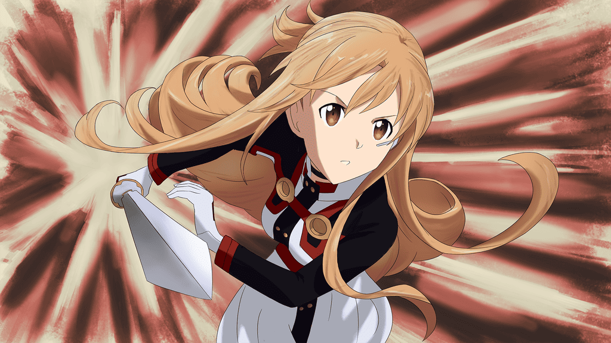

Este jogo não é mera brincadeira de criança.
Sword Art Online, o primeiro VRMMORPG do mundo, tornou-se um jogo da morte. Há um mês, dez mil usuários encontram-se presos no universo do game. Asuna, que conseguiu vencer o primeiro piso do castelo flutuante de Aincrad, une-se a Kirito em sua jornada rumo ao último andar. Com a ajuda de Argo, a negociante de informações, vencer os pisos parecia ser tarefa fácil, mas…
Começa um conflito entre duas das maiores guildas que deveriam estar unidas: o Esquadrão de Liberação de Aincrad (ALS) e a Brigada dos Cavaleiros Dragões (DKB). Enquanto isso, uma misteriosa figura manipula a situação por trás dos panos…
Nesta perigosa batalha mortal, uma ameaça que desafia qualquer estratégia se aproxima de Asuna e Kirito.
Alguns personagens da obra:
-
Nome: Kirigaya Kazuto
Codename: Kirito
Detalhe:Protagonista e Espadachim
-

Nome: Asuna Yuuki
Codename: Asuna
Detalhe: Parceira Romântica do Kirito
-
Nome: Yui
Codename: ...
Detalhe: Filha do Protagonista
-
Nome: Suguha Kirigaya
Codename: Leafa
Detalhe: Irmã mais nova do Protagonista
-
Nome: Akihiko Kayaba
Codename: Heathcliff
Detalhe: Vilão e criador do jogo Sword Art Online
-
Nome: Asada Shino
Codename: Sinon
Detalhe: Mestre em armas no jogo (GGO).
-
Nome: Konno Yuuki
Codename: Yuuki
Detalhe: Amiga da Asuna e espadachim
-
Nome: Nochizawa Eiji e Shigemura Yuuna
Codename: Eiji e Yuna
Detalhe: Vilões no filme
-
Nome: Eugeo
Codename: ...
Detalhe: Melhor amigo do Kirito em Alicization
-
Nome: Alice Zuberg
Codename: ...
Detalhe: Cavaleira da Integridade
-
Nome: Quinella
Codename: Administrator
Detalhe: Vilã principal de Alicization